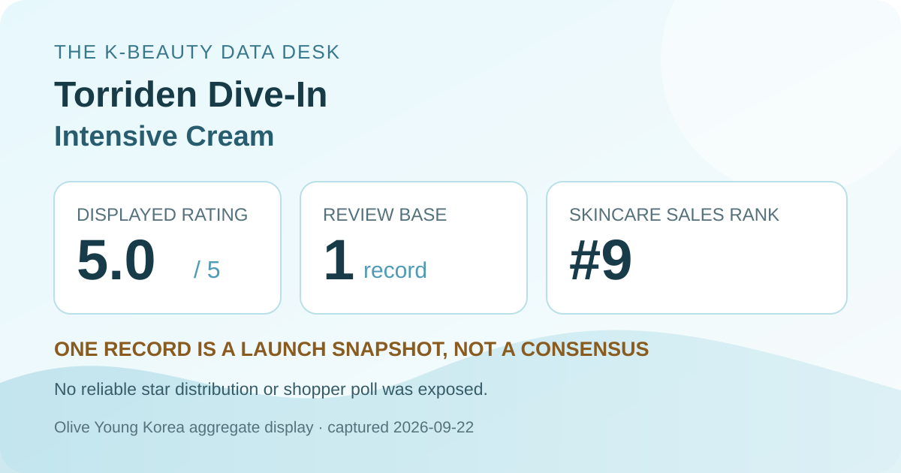
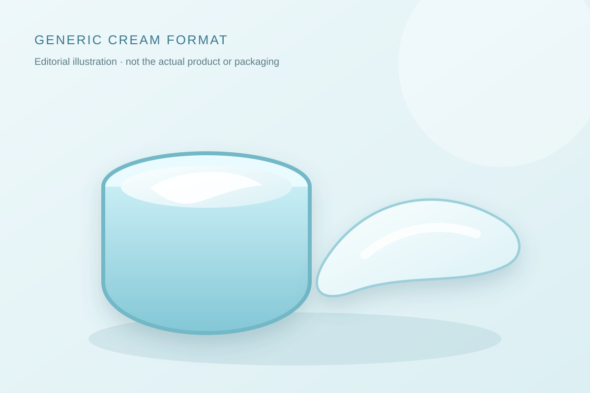

Data captured September 22, 2026. This is an independent analysis of retailer-displayed product and aggregate review information. I did not test the cream, and no individual review, reviewer identity, product photograph, or user photograph is copied or translated.

The short version: this new 100 ml promotional cream set held rank nine in the retailer's captured skincare sales list. Its product header and review tab both displayed 5.0 out of 5 from one review record. That combination shows commercial visibility without established review depth.
Very little on its own. The displayed 5.0 tells us that the only accumulated record was positive enough to produce the maximum rounded average. It does not provide a distribution, a range of experiences, or evidence that the same outcome is common. It is best understood as an early launch datapoint rather than a verdict.
Sales rank answers a different question. A number-nine position says the listing was moving strongly relative to other skincare products during the retailer's ranking window. Launch visibility, discounting, bundle value, advertising, availability, and novelty can all contribute. None of those factors makes the product ineffective, but none proves product performance either. Rank and rating should therefore stay separate: one describes current commerce; the other summarizes a single feedback record.
The missing star distribution matters. A 5.0 average from one record may seem to imply a five-star selection, but the page did not display a star-by-star chart that could be reported directly. This analysis does not reverse-engineer unshown fields. The same rule applies to polls: if the retailer does not expose a stable skin, concern, or irritation breakdown, there is no responsible percentage to fill in.
The captured headline described a 100 ml cream accompanied by a 20 ml cream and a 50 ml toner. That can make the listing attractive as a bundle, but it complicates interpretation. Sales rank may reflect interest in the complete set rather than the cream alone, and future versions may include different extras. A shopper comparing unit value should confirm which items remain included at checkout instead of treating the capture as a permanent package.
Using only the 100 ml main size, the ₩19,550 promotional display works out to roughly ₩1,955 per 10 ml. That deliberately ignores the companion items because the page did not assign them separate prices. It is a dated shelf comparison, not a universal value score. Shipping, taxes, regional sellers, coupon eligibility, formula differences, and expiry can matter more than the arithmetic.

The retailer calls the item an intensive cream, which supports a broad format description but not a sensory conclusion. This article did not handle or apply the formula. It cannot confirm whether the cream is dense or light, glossy or matte, scented or unscented, quick to settle, tacky, prone to pilling, or comfortable under sunscreen and makeup.
The local illustration is intentionally brand-neutral. Its pale color and soft swatch simply communicate “cream” as an editorial visual. They should not be mistaken for the actual product. For texture-sensitive shoppers, a tester or a retailer with workable return terms is more informative than a perfect average based on one record.
“Low Molecular Hyaluronic Acid” appears in the product's displayed name. This article does not infer the amount, molecular-weight distribution, delivery, penetration, or performance of any ingredient from that wording. It also does not claim that the cream increases skin water content for a particular duration, repairs a barrier, treats dehydration, or improves a medical condition.
No complete region-specific ingredient list was independently captured for this analysis. I therefore do not label the formula fragrance-free, alcohol-free, essential-oil-free, non-comedogenic, hypoallergenic, pregnancy-compatible, or suitable for eczema, rosacea, acne, allergy, or another condition. Check the current package for the market where you buy it, especially if an ingredient or treatment makes the decision higher stakes.
If your skin is actively inflamed, recently compromised, or under treatment, a retail rank should not guide medical care. Follow qualified advice appropriate to your situation. Stop use if a concerning reaction occurs and seek help when needed. This article is shopping context, not diagnosis or personalized treatment.
The captured page displayed the maximum 5.0 average, but it came from only one review record. That is too small a base for a stable consensus.
The capture did not expose a reliable skin-type or irritation poll, and this article did not test the formula. The data cannot establish fit or predict individual tolerance.
No. The wording identifies the listing. It does not disclose a verified concentration or prove hydration, barrier, penetration, or clinical outcomes.
No. It is a local code-drawn format illustration, not a photograph or evidence of the product's appearance.
Not necessarily. They were displayed on the capture date. Verify the current option, gifts, stock, coupon terms, and checkout total.
Torriden Dive-In Low Molecular Hyaluronic Acid Intensive Cream was the first valid unpublished candidate in the captured ranking, appearing at number nine. Its product and review views agreed on 5.0 stars from one record, and the promotional headline provided clear pack and price context.
The responsible conclusion is “prominent but too early.” The listing may deserve a place on a shortlist if the current label, pack, texture test, and price suit a real routine need. The review data does not yet justify a broad recommendation, a star-distribution claim, a skin-type claim, a gentleness claim, or any medical or clinical conclusion.
← All K-Beauty Data Desk reviews · Best-seller rankings · Skin-poll representation · About & methodology
The analysis is based on the dated retailer product page captured on 2026-09-22. Open the source listing.
Published by The K-Beauty Data Desk · Aggregate data captured 2026-09-22. No individual review text, name, product photo, or user photo is reproduced or translated. I did not test the product and received no product or payment for this coverage.